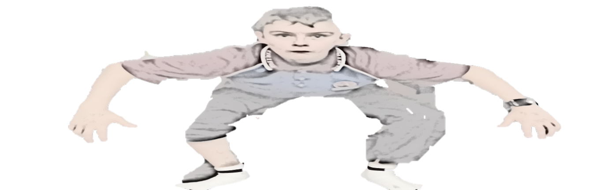

I tried to learn to code more than once. Both times I quit. Not because it was too hard — because I was going about it the wrong way. Finishing courses, memorising syntax, waiting until I felt ready to actually make something.
Life has a way of showing you that waiting until you're ready is just another way of not starting. I've had to learn that lesson in more areas than just code. Eventually the approach changes — you stop preparing to do the thing and you just do it.
For me that came from building something real with a friend. An interactive 3D map of the Glass House Mountains — I handled the HTML and CSS, she did the JavaScript. Watching what she could do made me want to get there too. That was enough.
billy-bit.com is space-themed. Every planet is a project. Space made sense because it's endless — there's always somewhere further out to go, always something new on the horizon. The site grows as I grow.
It's also a journal. Code notes, things I had to figure out the hard way, shortcuts that actually helped. A record of the doing. If someone finds something here that stops them from quitting — that's the whole point.
Somewhere in web development, game development, or robotics. Probably all three at different points. Right now I'm just focused on getting good at the fundamentals and building things that actually work.
I'm not an expert. I'm 13 and I'm figuring it out. But I think that's exactly why this site might be useful to someone — it's not written from the top of the mountain.